Draws a pie chart illustrating the numerical proportion of each group
relative to the whole. Each slice corresponds to a level of the x-axis
variable and its angle is proportional to the y-axis value (or the
observation count when y is omitted).
The function supports count aggregation (omit y to plot
observation counts per x-category), slice labels via
ggrepel::geom_label_repel(), clockwise or counter-clockwise slice
ordering, faceting, and splitting into separate sub-plots via
split_by.
Usage
PieChart(
data,
x,
y = NULL,
label = y,
split_by = NULL,
split_by_sep = "_",
clockwise = TRUE,
facet_by = NULL,
facet_scales = "free_y",
facet_ncol = NULL,
facet_nrow = NULL,
facet_byrow = TRUE,
theme = "theme_this",
theme_args = list(),
palette = "Paired",
palcolor = NULL,
palreverse = FALSE,
alpha = 1,
aspect.ratio = 1,
keep_na = FALSE,
keep_empty = FALSE,
legend.position = "right",
legend.direction = "vertical",
title = NULL,
subtitle = NULL,
xlab = NULL,
ylab = NULL,
combine = TRUE,
nrow = NULL,
ncol = NULL,
byrow = TRUE,
seed = 8525,
axes = NULL,
axis_titles = axes,
guides = NULL,
design = NULL,
...
)Arguments
- data
A data frame.
- x
A character string specifying the column name for the x-axis (categories). Must be character or factor. Each unique value becomes a pie slice.
- y
A character string specifying the numeric column for the y-axis. When
NULL(default), the count of observations in each (x,facet_by) combination is used and stored as.y.- label
A character string specifying the column to use for slice labels.
NULL(default) hides labels. WhenTRUE, theyvalues are used as labels. Wheny = NULL, use".y"to label with the computed counts.- split_by
The column(s) to split the data by and produce separate sub-plots. Multiple columns are concatenated with
split_by_sep.- split_by_sep
A character string to separate concatenated
split_bycolumns. Default"_".- clockwise
A logical value. When
TRUE(default), the pie slices are ordered clockwise starting from the top. WhenFALSE, slices are ordered counter-clockwise.- facet_by
A character string specifying the column name of the data frame to facet the plot. Otherwise, the data will be split by
split_byand generate multiple plots and combine them into one usingpatchwork::wrap_plots- facet_scales
Whether to scale the axes of facets. Default is "fixed" Other options are "free", "free_x", "free_y". See
ggplot2::facet_wrap- facet_ncol
A numeric value specifying the number of columns in the facet. When facet_by is a single column and facet_wrap is used.
- facet_nrow
A numeric value specifying the number of rows in the facet. When facet_by is a single column and facet_wrap is used.
- facet_byrow
A logical value indicating whether to fill the plots by row. Default is TRUE.
- theme
A character string or a theme class (i.e. ggplot2::theme_classic) specifying the theme to use. Default is "theme_this".
- theme_args
A list of arguments to pass to the theme function.
- palette
A character string specifying the palette to use. A named list or vector can be used to specify the palettes for different
split_byvalues.- palcolor
A character string specifying the color to use in the palette. A named list can be used to specify the colors for different
split_byvalues. If some values are missing, the values from the palette will be used (palcolor will be NULL for those values).- palreverse
A logical value indicating whether to reverse the palette. Default is FALSE.
- alpha
A numeric value specifying the transparency of the plot.
- aspect.ratio
A numeric value specifying the aspect ratio of the plot.
- keep_na
A logical value or a character to replace the NA values in the data. It can also take a named list to specify different behavior for different columns. If TRUE or NA, NA values will be replaced with NA. If FALSE, NA values will be removed from the data before plotting. If a character string is provided, NA values will be replaced with the provided string. If a named vector/list is provided, the names should be the column names to apply the behavior to, and the values should be one of TRUE, FALSE, or a character string. Without a named vector/list, the behavior applies to categorical/character columns used on the plot, for example, the
x,group_by,fill_by, etc.- keep_empty
One of FALSE, TRUE and "level". It can also take a named list to specify different behavior for different columns. Without a named list, the behavior applies to the categorical/character columns used on the plot, for example, the
x,group_by,fill_by, etc.FALSE(default): Drop empty factor levels from the data before plotting.TRUE: Keep empty factor levels and show them as a separate category in the plot."level": Keep empty factor levels, but do not show them in the plot. But they will be assigned colors from the palette to maintain consistency across multiple plots. Alias:levels
- legend.position
A character string specifying the position of the legend. if
waiver(), for single groups, the legend will be "none", otherwise "right".- legend.direction
A character string specifying the direction of the legend.
- title
A character string specifying the title of the plot. A function can be used to generate the title based on the default title. This is useful when split_by is used and the title needs to be dynamic.
- subtitle
A character string specifying the subtitle of the plot.
- xlab
A character string specifying the x-axis label.
- ylab
A character string specifying the y-axis label.
- combine
Logical; when
TRUE(default), returns a combinedpatchworkobject. WhenFALSE, returns a named list of individualggplotobjects.- ncol, nrow
Integer number of columns / rows for the combined layout (passed to
wrap_plots).- byrow
Logical; fill the combined layout by row. Default
TRUE(passed towrap_plots).- seed
A numeric seed for reproducibility. Passed to
validate_common_args().- axes
A character string specifying how axes should be treated across the combined layout (passed to
wrap_plots).- axis_titles
A character string specifying how axis titles should be treated across the combined layout. Defaults to
axes.- guides
A character string specifying how guides (legends) should be collected across panels. Default
"collect"(passed tocombine_plots()).- design
A custom layout design for the combined plot (passed to
combine_plots()).- ...
Additional arguments.
Value
A ggplot object, a patchwork object, or a named list
of ggplot objects (when combine = FALSE), each with
height and width attributes in inches.
split_by workflow
When split_by is provided:
validate_common_args()validates theseedandfacet_bysettings.check_keep_na()andcheck_keep_empty()normalise thekeep_na/keep_emptyarguments for all columns (x,split_by,facet_by).process_theme()resolves the theme function.The
xcolumn is forced to factor;yis validated.The
split_bycolumn is validated and its NA / empty levels are processed viaprocess_keep_na_empty(). It is then removed from the per-columnkeep_na/keep_emptylists.The data frame is split by
split_by(preserving level order). Ifsplit_byisNULL, the data is wrapped in a single-element list with name"...".Per-split
palette,palcolor,legend.position, andlegend.directionare resolved viacheck_palette(),check_palcolor(), andcheck_legend().PieChartAtomic()is called for each split. Iftitleis a function, it receives the split level name and can generate dynamic titles.Results are combined via
combine_plots()(whencombine = TRUE) or returned as a named list.
Examples
# \donttest{
data <- data.frame(
x = factor(c("A", "B", "C", NA, "E", "F", "G", "H"), levels = LETTERS[1:8]),
y = c(10, 8, 16, 4, 6, 12, 14, 2),
group = factor(c("G1", "G1", NA, NA, "G3", "G3", "G4", "G4"),
levels = c("G1", "G2", "G3", "G4")),
facet = factor(c("F1", NA, "F3", "F4", "F1", NA, "F3", "F4"),
levels = c("F1", "F2", "F3", "F4"))
)
# Basic pie chart
PieChart(data, x = "x", y = "y")
# Keep NA and empty levels
PieChart(data, x = "x", y = "y", keep_na = TRUE, keep_empty = TRUE)
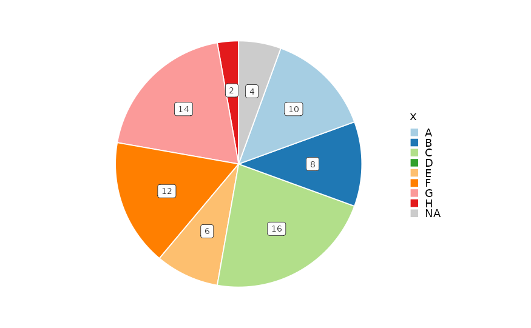
# Counter-clockwise ordering
PieChart(data, x = "x", y = "y", clockwise = FALSE)
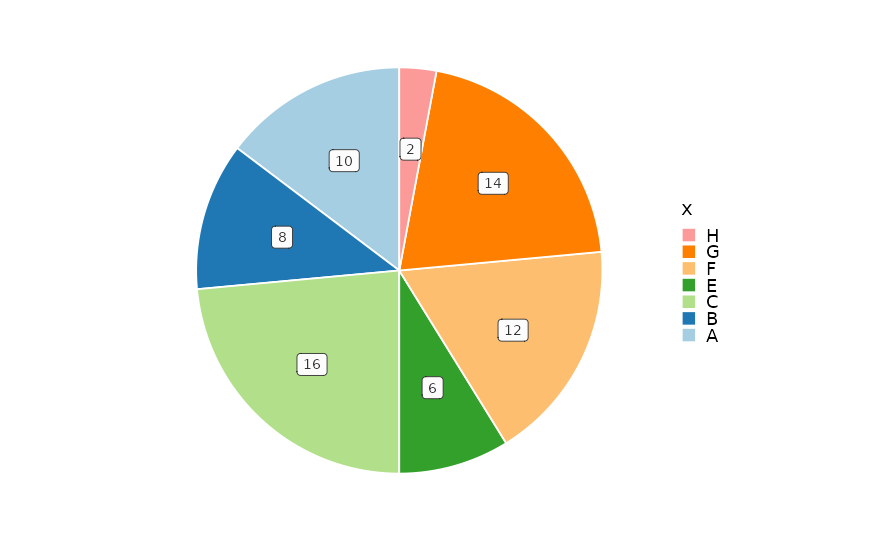
PieChart(data, x = "x", y = "y", clockwise = FALSE,
keep_na = TRUE, keep_empty = TRUE)
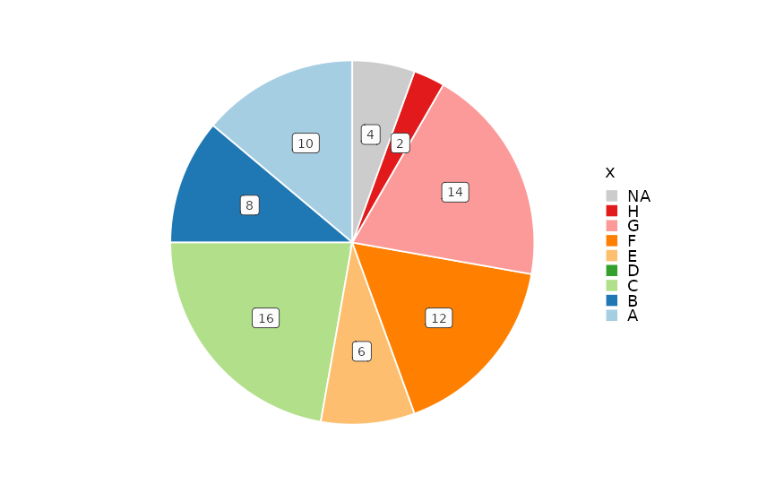
# With slice labels
PieChart(data, x = "x", y = "y", label = "group")
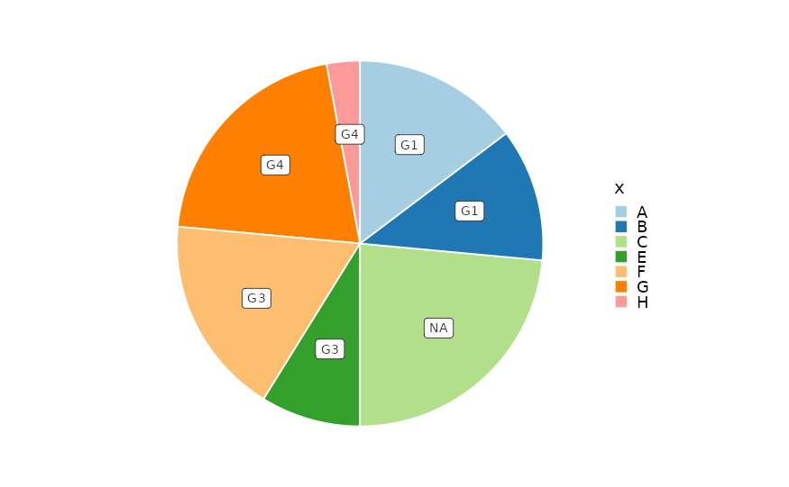
# Faceting
PieChart(data, x = "x", y = "y", facet_by = "facet")
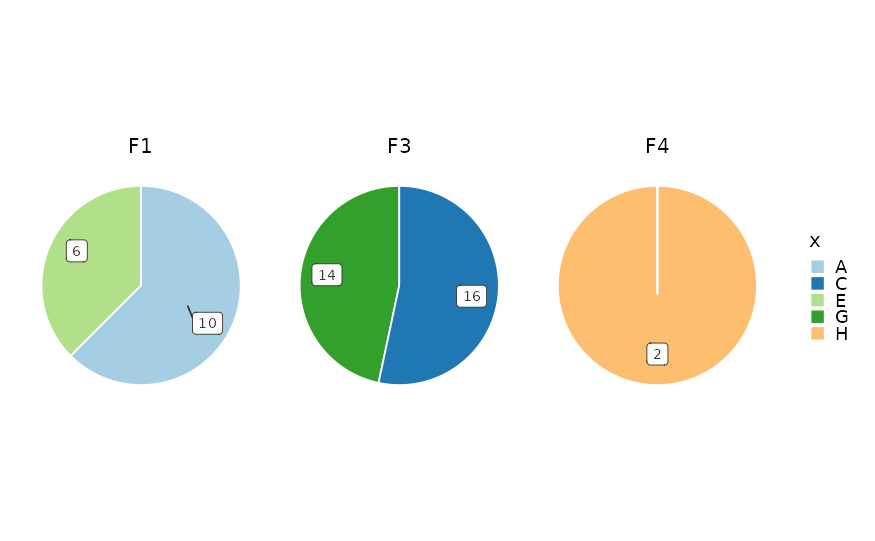
PieChart(data, x = "x", y = "y", facet_by = c("facet", "group"),
keep_empty = "level")
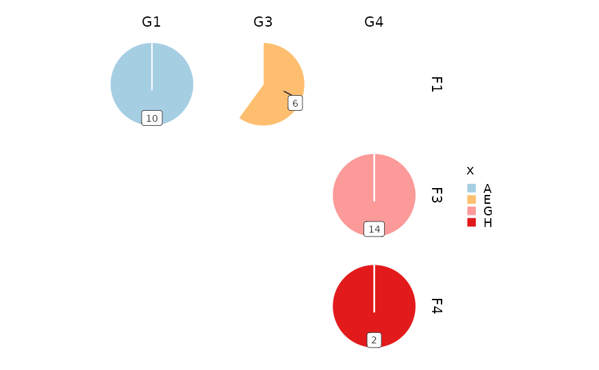
PieChart(data, x = "x", y = "y", facet_by = c("facet", "group"),
keep_empty = TRUE)
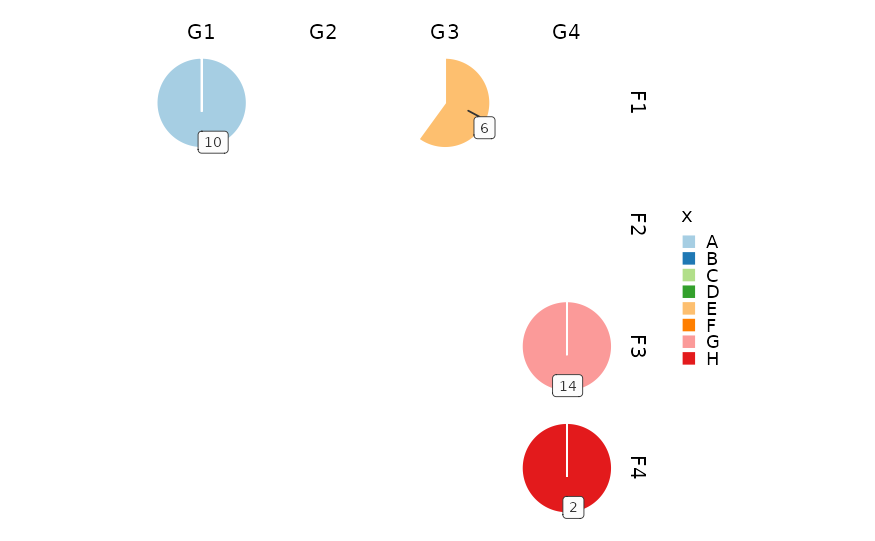
# Split into sub-plots
PieChart(data, x = "x", y = "y", split_by = "group")
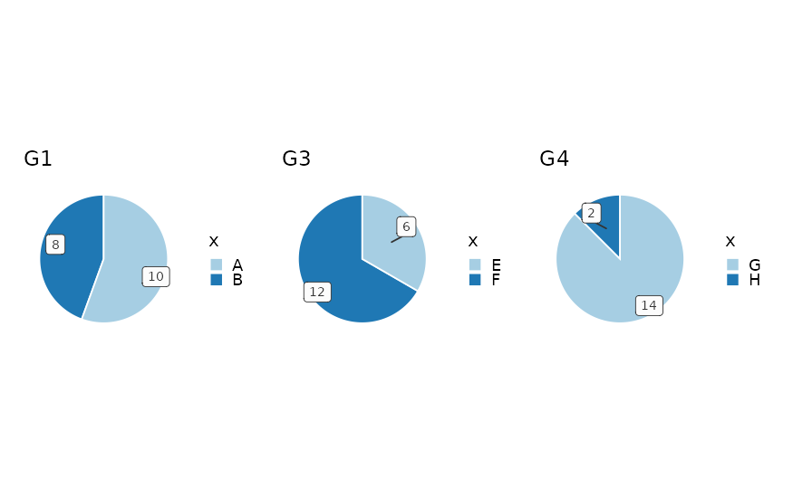
# Per-split palettes
PieChart(data, x = "x", y = "y", split_by = "group",
palette = list(G1 = "Reds", G2 = "Blues", G3 = "Greens", G4 = "Purp"))
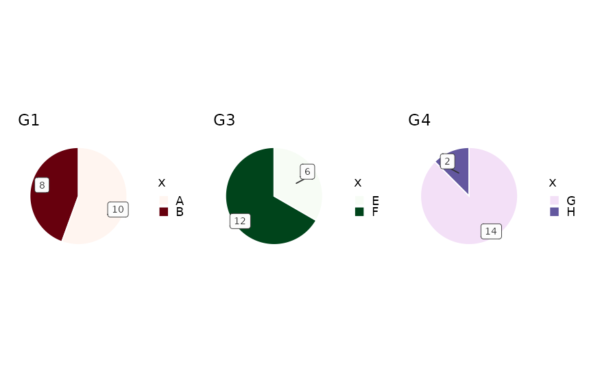
# Y from count
PieChart(data, x = "group")
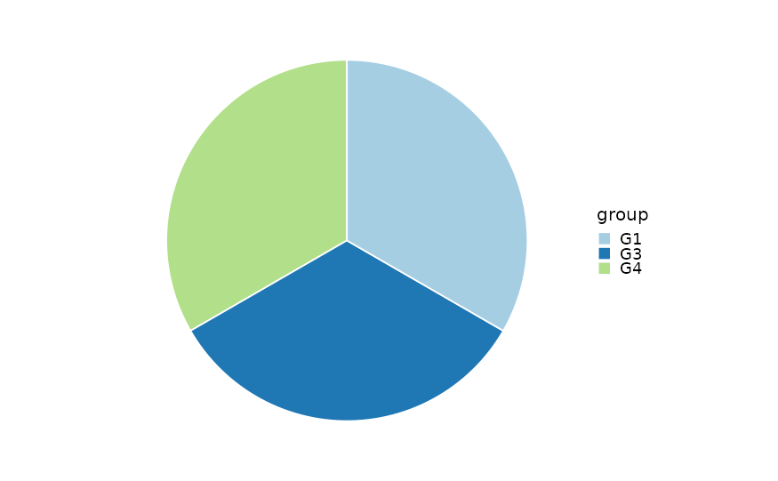
# Y from count with label
PieChart(data, x = "group", label = ".y")
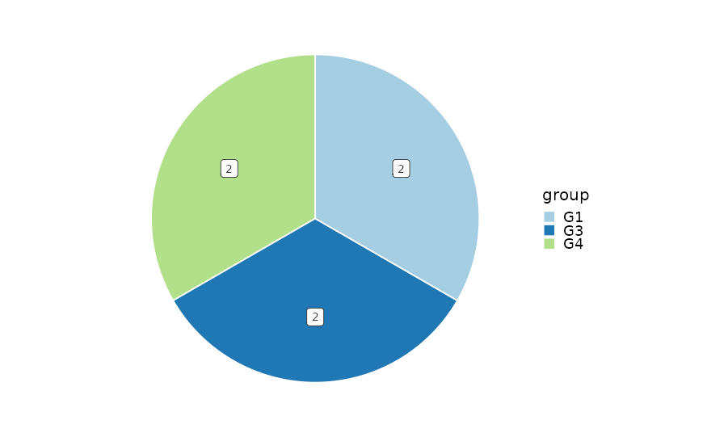
# }